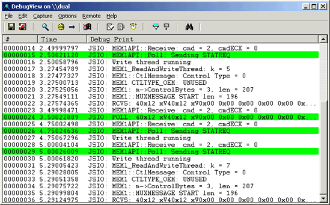

DebugView
Introduction
DebugView is an application that lets you monitor debug output on your local system, or any computer on the network that you can reach via TCP/IP. It is capable of displaying both kernel-mode and Win32 debug output, so you don't need a debugger to catch the debug output your applications or device drivers generate, nor do you need to modify your applications or drivers to use non-standard debug output APIs.
DebugView works on Windows 95, 98, Me, 2000, XP, Windows Server 2003, Windows for x64 processors and Windows Vista.
DebugView Capture
Under Windows 95, 98, and Me DebugView will capture output from the following sources:
- Win32 OutputDebugString
- Win16 OutputDebugString
- Kernel-mode Out_Debug_String
- Kernel-mode _Debug_Printf_Service
Under Windows NT, 2000, XP, Server 2003 and Vista DebugView will capture:
- Win32 OutputDebugString
- Kernel-mode DbgPrint
- All kernel-mode variants of DbgPrint implemented in Windows XP and Server 2003
DebugView also extracts kernel-mode debug output generated before a crash from Window NT/2000/XP crash dump files if DebugView was capturing at the time of the crash.
DebugView Capabilites
DebugView has a powerful array of features for controlling and managing debug output.
Features new to version 4.6:
- Support for Windows Vista 32-bit and 64-bit
Features new to version 4.5:
- Support for log-file rollover: To better support long-running captures, DebugView can now create a new log file each day, optionally clearing the display when doing so.
Features new to version 4.4:
- Support for Windows Server 2003 64-bit Edition and Windows XP 64-bit Edition for x64: DebugView now captures kernel-mode debug output on 64-bit versions of Windows.
- Clock-time toggle: you can now toggle between clock time and elapsed time modes.
Features new to version 4.3:
- Support for Windows XP SP2: DebugView now captures kernel-mode debug output on Windows XP SP2.
- More highlighting filters: Many people have asked for more highlighting filters.
- Log file wrapping: A new log file option has DebugView wrap around to the start of the log file when the specified size limit is reached.
- Larger buffers: Larger Win32 and kernel-mode buffers lessen the chance of dropped debug output.
- Clear-output string: When DebugView sees the special debug output string "DBGVIEWCLEAR" it clears the output.
- Client minimize-to-tray: You can now run the client minimized in the tray.
Features new to version 4.2:
- Kernel-hook bug fixed: DebugView sometimes mistakenly report that it couldn't hook kernel-mode debug output on Windows XP and Server 2003.
- Client global-capture option: A new option allows the client to capture console Win32 debug output on Terminal Server systems when run from a non-console session.
- Filtering improved: Filters can be much longer and now apply to Win32 process IDs when process IDs are included in the output.
- Crash-dump support improved: Several bugs related to extracting kernel-mode output from crash dumps are fixed and DebugView now loads resulting log files.
- More highlight filters: DebugView now has 10 highlight filters, up from 5.
- Insert comments: A new menu item lets you insert comments into output.
- New switches: New command-line switches allow you to specify history depth and load log files.
- Better balloon tips: If an output line is wider than the screen its mouse hover balloon tip word wraps.
Features new to version 4.1:
- Save and load filters: You can save and load filters, including the highlighting colors.
- Load saved logs: You can now load a log file back into the DebugView output window.
- Capture boot-time kernel-mode debug output: Under Windows NT/2K, you can use DebugView to capture debug output generated by drivers from the earliest point in the boot process.
Here is a list highlighting some of DebugView's other features:
- Remote monitoring: Capture kernel-mode and/or Win32 debug output from any computer accessible via TCP/IP - even across the Internet. You can monitor multiple remote computers simultaneously. DebugView will even install its client software itself if you are running it on a Windows NT/2K system and are capturing from another Windows NT/2K system in the same Network Neighborhood.
- Most-recent-filter lists: DebugView remembers your most recent filter selections, with an interface that makes it easy to reselect them.
- Process ID option: Toggle the display of process IDs for Win32 debug output.
- Clipboard copy: Select multiple lines in the output window and copy their contents to the clipboard.
- Log-to-file: Write debug output to a file as its being captured.
- Printing: Print all or part of captured debug output to a printer.
- One-file payload: DebugView is implemented as one file.
- Crash-Dump Support: DebugView can recover its buffers from a crash dump and save the output to a log file so that users can send you the output your NT driver generated right up to the time of a crash.
The on-line help file describes all these features, and more, in detail.
Installation and Use
Simply execute the DebugView program file (dbgview.exe) and DebugView will immediately start capturing debug output. To
run DebugView on Windows 95 you must get the
WinSock2 update
from Microsoft. Note that if you run DebugView on Windows NT/2K/XP you must have administrative privilege to view kernel-mode
debug output. Menus, hot-keys, or toolbar buttons can be used to clear the window, save the monitored data to a file, search
output, change the window font, and more. The on-line help describes all of DebugView's features.

This is a screenshot of DebugView capturing Win32 debug output from a remote system. Note the presence of a highlighting filter.
In order to help us track its use, please download through the link that represents the operating system on which you will use or mostly use DebugView.
Note that the zip files are identical, and DebugView runs on all Windows platforms.
Download DebugView (x86- 186 KB) - you plan on using DebugView on Win9x
Download DebugView (x86 - 186 KB) - you plan on using DebugView on 32-bit versions of NT/2K/XP/Server 2003/Vista
Download DebugView (x64 - 186 KB) - you plan on using DebugView on 64-bit XP/Server 2003/Vista
Back to Top